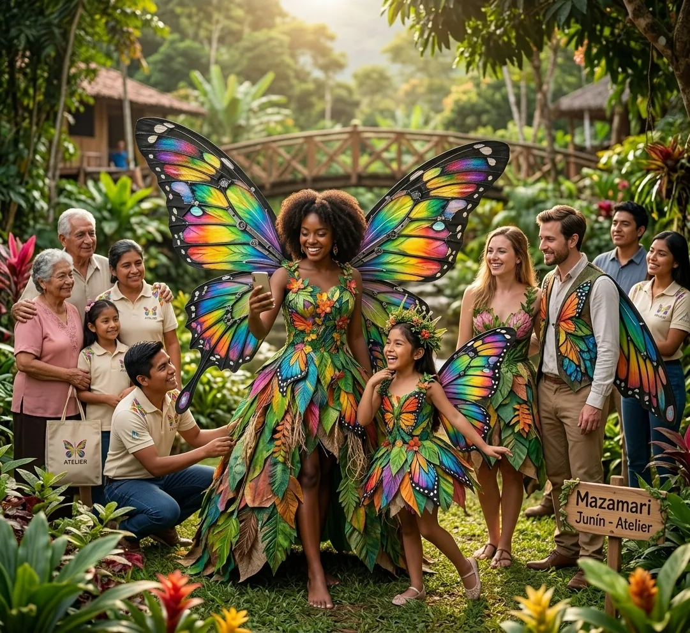
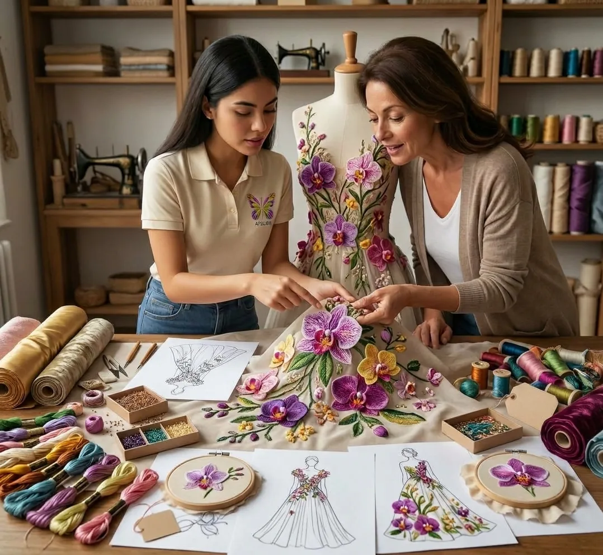

Estudiantes y jóvenes
Para actividades creativas, presentaciones, sesiones fotográficas y eventos (menores de edad con supervisión adulta).
Atelier conecta con personas que valoran el arte, la naturaleza y las experiencias fuera de lo común.

Nuestro público busca vestuarios temáticos de alto impacto visual, cómodos y ligeros, para eventos, turismo y creación de contenido.
Para actividades creativas, presentaciones, sesiones fotográficas y eventos (menores de edad con supervisión adulta).
Personas que buscan una propuesta visual diferente para sus fotografías, videos y redes sociales.
Visitantes y clientes que desean una experiencia vinculada con la naturaleza y la cultura de la Selva Central.

Buscan piezas que les permitan destacar, sentirse cómodos y expresar su personalidad.